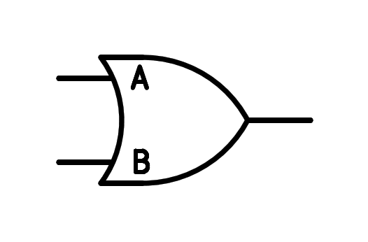
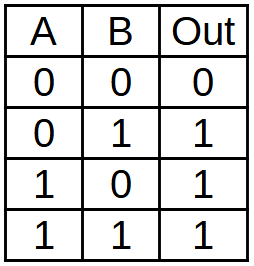
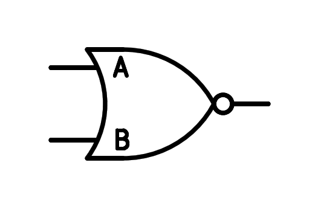
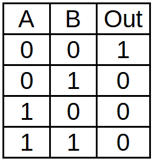

6. The logic gate or¶
The logic gate has two or more entrances and one way out.
The output has a high logical value (1) if any of its inputs have a high logical value (1).
That is, if the entrance to or input B are at high level, the output will be at high level. Hence the name or in English.
The gate symbol OR is as follows:
{kind=link}

Two-entry OR logic gate symbol.¶
The logical function of the or gate is represented by means of a sum, so that the exit of the gate will be the logic sum of the entries:
The Truth Table of the OR gate is as follows:
{kind=link}

Truth of the logic gate or two entries.¶
If the two entries are worth zero, the exit will be worth zero, but if any entry is worth one, the exit will be worth one.
The nor logical gate¶
The Nor logic gate has two or more entries and one way out.
The exit will be the same as that of an or gate, but inverted. That is to say that the exit will only be worth one when all the entrances are worth zero.
The symbol of the NOR gate is as follows:
{kind=link}

Two-entry NOR Logic Gate symbol.¶
The logical function of the NOR gate is represented by means of a denied sum, so that the exit of the gate will be the logical sum of the entrances that are finally invested:
The Truth Table of the NOR gate is as follows:
{kind=link}

Truth Table of the Nor Logic gate of two entries.¶
Computers built using discrete NOR logic gates include the capsule Apollo guidance computer from the space programme that landed on the Moon in 1969, and the famous Cray-1 supercomputer, which was on the market until 1982.
Simulation¶
In the following simulation we can see the functioning of the logic gate or and, below, the operation of the Nor logical gate.
Exercises¶
- Explain with your words the functioning of the logic gate or.
- Draw the symbol of the logical gate of two entries, its logical function and its truth table.
- Explain with your words the functioning of the Nor logical gate.
- Draw the symbol of the nor logical gate of two entries, its logical function and its truth table.
- In the simulator adds an investment gate to the exit of the Or gate and verifies that its answer is equal to that of the Nor gate.
- Draw a logical gate of three entries, its logical function and its truth table.